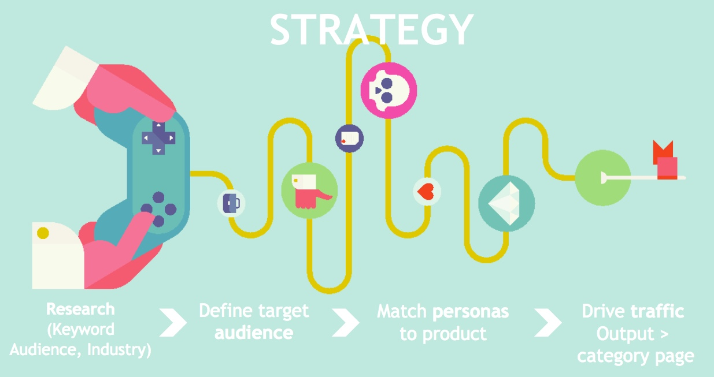

-
Create World Class Quizzes + Engage With Perfect Prospects
This Thursday at 2PM Eastern, we’ll be joining Likeable Local for a joint webinar:

This conversation will be an incredible opportunity to answer two pressing questions that every marketer has asked:
What good does it do you to create the best
content on earth if no one sees it?and
Why pursue the best prospects if
you have no way of engaging them?Tune in as Chief Qwizard Owen Fuller and Likeable Local’s Nicole Kroese discuss:
- How to create state of the art quizzes that amaze and inspire
- How to find the right audience for your quizzes
- How to capture the maximum amount of leads from your quizzes
- How to determine the type of quizzes your audience wants to see

-
Take or Take Not: Are You a Star Wars Quiz Jedi?
…there is no try.

Everyone loves a good Star Wars quiz, so we decided to pick the six best and throw them up here. We’re Star Wars fans every day, but May the Fourth does happen to be a pretty great opportunity for a mashup.
Which is your favorite Star Wars Quiz?
Pick one or a few and see how well you do.
Morphsuits
Dorkly
Oxford
DogBreedsList.com
Sideshow Collectibles
Qzzr
And last but not least, we wanted to make a Star Wars quiz of our own, so we threw our hat in the ring.
-
The Anatomy of the Million Dollar Quiz [Webinar]
If you’ve followed our blog for long, you’ve certainly heard about the Zenni Optical quiz that has blown up, producing incredible results. We’ve been riding the roller coaster with them, and we wanted to grab an opportunity to step back and analyze how it all happened.
Today we had a great webinar with Becca James from Internet Marketing Inc (IMI)—the agency behind the quiz—who took us through the quiz execution process, allowing us to reverse engineer the magic of a [nearly] million dollar quiz.
Edit (5/14/15): This quiz has now generated $1,020,660!
>>Click to Tweet your gratitude to Becca
The anatomy of the [nearly] million dollar quiz
First things first, here’s the quiz we’re referring to:
So how did this thing take off and generate nearly $1 million?
1. Goals
As with any campaign, to reach amazing results, you need to start with goals. From a broader perspective, the four things that Zenni Optical wanted most out of their partnership with IMI were:
- Increase organic traffic
- Improve search ranking
- Increased brand awareness
- Quality link building
For this particular campaign, Zenni had developed a “Hottest Trends” landing page with eight frame styles on it, and they wanted IMI to help drive traffic to it. So, that’s where they started.
2. Strategy

Research and data
Becca pointed out how important it is for them at IMI to build a foundation of data and insights before they move on to the creation process. What does this mean?
Technical research — This included keyword research, an understanding of SEO practices and how this landing page was doing. It also included housekeeping items to make sure that the page was crawlable by Google.
Conversational research — It was important to not only know what keywords were at play, but what their consumers were saying. What were they looking for? What questions did they have? To achieve this, IMI plugged the keywords into a social listening tool, to provide audience insights. The one they use is NetBase, but there are many out there. What’s important is that you use one.
This is important because it tells you how people are talking about those keywords—it’s really valuable to know, because you’re studying how you can be a solution. Remember, the goal in content marketing is to provide meaningful information, and you can only do this if you know what meaning is to them.
Comparative research — Ask these questions: What is your competitive landscape? What are you going up against? Where are consumers turning to right now to get their answers?
Define target audience
We touch on this in every insight, but it’s imperative to know your audience. And the best way to do this is by developing personas. To do this, you’ll compile your audience insights, demographic data and what you know about the brand to differentiate the key types of people that will end up being your customers. Developing personas is the number one rule of creating quizzes.
Match personas to the outputs of the quiz
Here’s why this is amazing—if you’re building a quiz, you want nothing more than for the people taking the quiz to get their result and say “Wow, that’s amazing.” You want the answer to ring so true that an instant rapport is built. BOOM—you have understanding and legitimacy.
There’s this magical self-identifying element to a really good quiz, or piece of interactive content. The customer experience goes from just finding a solution online to feeling like a personalized solution was created for them.
And that magic is manifested through two priceless results—brand affinity and organically driven conversion. Simply put—people love brands that make their lives better, and they’re willing to listen to them.
And there are the two greatest things you can offer in content marketing: (1) personalization and (2) a solution. A well crafted quiz offers both.
Call to action
After you’ve provided this for people, give them something to do about it. And make it as seamless as possible.
A note on design from IMI: If your quiz and landing page are synonymous in design and messaging, people will easily think that the landing page is still part of the quiz or that it’s personalized for them. Therefore, they feel like they’re engaging in a really special experience.
3. Promotion
There is a massive clutter of content on the internet. The only definitive way that your content will be successful is an investment in promotion.
What’s the perfect mix of promotion? Becca broke their promotion strategy down into three categories:
Owned — The quiz was promoted through any channel they had direct access to—these efforts included newsletters, banners on the homepage, etc.
Earned — Included in this category were social media channels and outreach to key influencers in their network. Some of these were fashion experts and outlets, as well as optometry publications and thought leaders.
Paid — Content marketing is supposed to be primarily organic, but it’s important that, among the owned and earned, you use a mix of paid search, paid social and content amplification strategies. They paid for ads on Facebook, but they also used services like StumbleUpon, Outbrain, IZEA, and Taboola to push the quiz out and target it to specific audiences that would care about it.
4. Results/Tracking
In content marketing, it’s important to define success, and how you define success. What factors will determine that you’ve been successful? To gauge results well, you want a metric that you can track at every step down the conversion funnel.

Visibility
How many people saw your content? You’ll want to track page views, email opens, inbound links, and referral visitors.
Engagement
Engagement from content marketing is not as clear as that from PPC—you can’t just point to how much money you put in and how much money you got out.
That being said, it’s not to say that you can’t track your engagement. But you may need to be a little more creative about how you do it. What Becca decided to track was on on-page engagement and off-page engagement.
On-page engagement or quiz engagement
- How many people take the quiz?
- How many finished the quiz?
- How many lead conversions did they get? Emails? Click-throughs?
Off-page engagement
- Was it liked?
- Was it shared?
- Did people leave positive comments?
- Where does it rank on search engines?
Traffic and lead quality
Behavior funnels are a great way to feel this out, because they illustrate the customer journey and speaks to the quality of the content. Using tools like Google Analytics, you can see what people do after they take the quiz. Do they continue on through your CTA like you ask them to? Or do they go somewhere else? Do they then continue on to conversion?
When we launched this webinar, we called it the Half Million Dollar Quiz. But since then, we realized that the new number is $909,738.06, with 533,538 unique visitors. That’s just under $1 million in revenue, and a 7,500% return on investment. Wow! That’s just incredible.
Another thing you’ll want to pinpoint is which channels were the most revenue-generating. For IMI, these were the top three sources of revenue:
- Organic search: $104,924.34
- Paid search: $73,393.06
- Email: $73, 331.96
Conclusion
Remember, content marketing is a long-tail form of marketing. If you do it right, your content will live for a long time, continually bringing in new business—this quiz is every bit as profitable now as it was when it was released. And by that I mean it’s really profitable.
We’re thrilled with how this quiz has turned out. In the end, the agency and brand (IMI and Zenni) win, the platform (Qzzr) wins, and the customers win—they had a really great experience that ultimately resulted in many of them purchasing products that they were very happy with.
And the relationship with the customer continues—you have their email addresses, but you also have a lot of valuable information about them that will allow you to continue to provide meaningful information and recommendations to your customers.
If you’d like to know how to build a great quiz, check out another webinar—The Killer Techniques Behind World-Class Quizzes.
Check out the slides from the webinar for more detail:
-
Entrepreneur Quiz: Are You an Art of the Start Expert?

Do you live in that state of mind? Have you read The Art of the Start more times than a dentist office magazine?
Take Guy Kawasaki’s entrepreneur quiz, and we’ll see how well you actually know your stuff. Then watch Guy’s webinar, The Art of Social Media, for more detail on how to use social media to pump up your business.
Entrepreneur quiz: Are you an Art of the Start expert?
-
Guy Kawasaki’s 12-Part Social Media Strategy Template
Wow, what a great day. Earlier this afternoon, we hosted a webinar with an unbeatable duo – Guy Kawasaki and Peg Fitzpatrick. The two engagement moguls are co-authors of a book called The Art of Social Media, and joined us to share their social media strategy template.
>>Take Guy’s Art of the Start quiz
If you’d like to check out the full video of today’s webinar, you can find it along with the slide deck at the bottom of this post. We’ll jump right into these 12 tips, but one quick anecdote is worth sharing :
At the outset of the webinar, before we dove into their tips, we threw in a quick plug for another webinar we’re hosting tomorrow with Internet Marketing Inc. These guys recently launched a quiz for Zenni Optical, and among other feats, the quiz has generated nearly $500,000 at the time of this writing.
Update 5/27/15: This quiz has now generated over $1 million. Incredible!
When we mentioned this in the webinar, Guy interrupted to say “How does a quiz generate half a million dollars in revenue? I want to understand that. Maybe I’ll give up social media and switch to quizzing. How does that work?”
So when you have one of the world’s foremost experts on business and social media, and he’s taken aback by the return on investment from one isolated campaign, there’s definitely major value to that. Click below to check out that webinar:

The Art of Social Media: a social media strategy template
Guy and Peg laid out what could be the 12 best insights in today’s fast-paced, competitive social media landscape. The value held in these tips, if applied immediately, holds untold value for you and your brand.
Think Tinder, not eHarmony
When crafting your social media strategy, remember what environment you’re in. If we’re comparing social media to a dating service, it’s Tinder, not eHarmony.

eHarmony asks a thousand questions to really try and get to know you and the aspects about you that may or may not be compatible with potential matches.
Tinder, however, shows you a picture, and asks you to determine instantly whether you think that person is “Hot or not.” Swipe left to pass, or right to match and learn more. There’s not much more to it than that.
In your social media, remember that people are going to make an instant decision about whether they like what you’re providing or not. In one moment, they’ll swipe left to ignore and not follow, or swipe right to follow you, learn more, and interact further.
What does this mean? One, you need to make things as simple as possible. Don’t post an essay, post a quick snippet. Two, post something that is visually appealing, and that conveys quickly what you or your brand is about.
Start first with your avatar and cover photos. Both should convey three important things about you – that you’re likeable, trustworthy, and competent.
Avatars should:
- be a picture of your face
- not be cropped – don’t take your face from a crowd
- be asymmetric
- be front-lit – you want them to be able to clearly see you
For a brand, use your logo. Anything else doesn’t look quite as professional.
Cover photos should:
- tell a story that you want conveyed
- use darker colors
- be hi-res and optimized for the proper size
Add images to every post
Every post that you throw out on social media should include an image. The only exceptions should be when you are responding to someone else’s post.
People are programmed to pick up visual cues before text. Your goal on social media – just like in every other endeavor – should be to stand out from the crowd. Take a look at the Twitter feed below. Where are your eyes naturally drawn?
To the image, right? Regardless of how long the other people spent crafting the words and syntax of their posts, it’s the one with the image that stands out, and you can bet it’s the one most likely to get engagement.
Fun tip: Did you know you can share up to four images in a Tweet?
Repeat your posts
It goes against our gut instinct sometimes, but the best social media wizards know how powerful repeat posting can be.
It makes sense – not everyone is on social media at the same time. Night Owls are unlikely to catch a post or tweet that landed that morning, and vice versa for the Early Birds. Post your best content multiple times throughout the day to capture the must engagement.
Now, it’s something that you want to experiment on with your own account, but Guy shared that his sweet spot happens to be right at about eight hours. He’ll get almost the same engagement the second and third times he posts the same content as he does the first – sometimes even more! To him (and really to anyone) it’s a no-brainer. If he can post it once and get 1,200 likes, or three times and get 3,600, why wouldn’t he?
Now, you’re occasionally going to get some people that notice this and feel the need to call you out on it. Do not let that deter you. If you have to lose a couple of followers to gain another 100, it’s well worth it.
Ensure Pin-ability
Pinterest has become an incredible way to interact with and engage new people. In fact, in many ways, Pinterest is becoming the new Google. People flock to it not only to find new shoes, but to search for information. Make it easy for them to find you, and to share your content with the world.
One quick example of this is in images. Make sure that the content you are sharing has a compelling image that is easy to share. If you’re posting a blog post or page from your website, make sure that you set a featured image.
That will help ensure that people don’t end up sharing this type of image:

Experiment constantly
Social media changes every day, as does the way that people interact with it. So it’s 100 percent imperative that you test regularly to make sure that you’re adapting with it, and squeezing every bit of value out of it.
Target with Facebook
Use targeting features to deliver your content to the people that want it most. Do some research into your existing customers and Facebook fans – are they predominantly male or female? Do they live in the US or abroad? How old are they?
Use any factors you can to determine who likes your stuff, and then target your outreach at more people like that. Offer valuable content to bring them in and convert.
Go artisanal
Did you know that you can get better Facebook reach by posting directly within Facebook, rather than scheduling and posting through another app? In many cases, it’s staggering how much of a difference it makes. Facebook now offers robust scheduling options, which makes it a lot easier to go directly with them.
Order your Instagram filters
This is a fun tip – did you know that you can rearrange your favorite Instagram filters by holding them down and dragging? This lets you put the ones you use most in the four prime real estate spots, saving time.
Upload video to Facebook and embed everywhere
Facebook has really been pushing the video thing lately. In fact, they’ve built a lot of their newsfeed algorithms to heavily favor native Facebook video over other video giants like YouTube and Vimeo.
In other words, if you upload video directly to Facebook, it’s likely to be seen twice as often as if you upload to YouTube and post the link in Facebook. Below you’ll see two examples of this. In the first picture, the video was uploaded to Facebook, and in the second, you’ll see a YouTube link.

If you can’t see, the first was seen over 30,000 times, while the second had only 13,000 views.
Both were posted within five minutes of each other. This is important to note for two reasons. One, it shows that the conditions were almost identical. He didn’t post one on a Sunday night and the other at noon on Tuesday. Two, it testifies once more to the power of repeat posting. Not one person complained that it was posted twice, and another 13,000 people saw the post as a result.
Always be Canva-ing
If you haven’t seen Canva, you really need to check it out. Say you’re the type of person that felt overwhelmed when we urged every post to have an image – well Canva takes the stress out of creating images. It makes it incredibly easy to create beautiful graphics to share on social media, even giving you easy templates to use and formatting for optimized sizing by social network.

Guy is the Chief Evangelist at Canva, and it’s easy to see how passionate he is about creating and sharing compelling images on social media.
Try Periscope
Periscope is the instant video platform that was recently acquired by Twitter. Their tagline is “Explore the world through someone else’s eyes,” and their tool makes it easy to share instant video of whatever you’re doing – so whether that’s a protester in Ukraine or footage of a big company event, the results are incredibly engaging. It’s picking up some major steam, so check it out.
SnapChat
“I had a great tip on SnapChat for you, but it disappeared in 6 seconds, so it’s gone.” – Peg Fitzpatrick, ladies and gentlemen
Conclusion
So that’s it. If you’d like more detail on these and more, pick up a copy of Guy and Peg’s book – The Art of Social Media.
For more information on how you can easily create and embed beautiful quizzes – the most shared content on Facebook – download our ebook, Are You a Qwizard?
{kind=link}
{kind=link}
{kind=link}
{kind=link}
{kind=link}